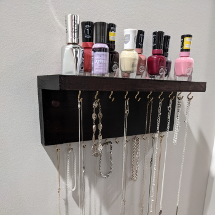

About
My name is Seth A. Taft, and I am Assistant Professor of Music Education, Director of Instrumental Music, and Program Coordinator for Music and Music Education at Limestone University. I have degrees in Music Education from the University of Colorado Boulder (PhD) and Virginia Commonwealth University (MM, BM). I am a teacher, musician, researcher, technology advocate, praxialist, and much more.
Teach
Teaching is the core of my professional life. One of the things I love about my current job is the variety of things I get to teach. I teach classes in instrumental performance, conducting, and music education. That means I get to teach students, especially future music educators, at multiple touchpoints in their musical experiences. I get to help them improve as musicians in Wind Ensemble, then discuss how I planned and made decisions the next day during methods classes. As much as I enjoy playing and conducting, there's nothing more satisfying than watching a student go from not being able to play or conduct something to being able to do so exceptionally well.
Teaching also affords me the opportunity to refine my understanding of musical and pedagogical concepts. I love when students ask questions to which I don't know the answers or derail my entire lesson plan to discuss a fringe case that doesn't fit neatly into the conceptual framework we're discussing. It makes me a better musician and teacher, and it means that next year's lesson will be all the more useful.
Play
My primary instrument is the saxophone, especially the baritone and alto saxes. As a music educator, I don't get as much time to play as I would like. Although most of my playing happens in traditional Western art music idioms and their derivatives, I enjoy playing pop tunes, especially well-written children's music, and can be heard playing in some unexpected places.
I also enjoy playing most other traditional band instruments, especially low brass and percussion. I also have a deep-seated love of obscure folk instruments, including the Chinese
erhu and Irish bodhrán, which I have unfortunately not yet found the time to learn to play well.
Research
Research and other academic writing are some of the main ways that I stay connected with the broader music education community. That connection takes place in several forms, including collaborations with peers, reading and discussing the writings of others, and adding my own discoveries and ideas into the compendium of music education knowledge.
I have collaborated with others in research on music teacher evaluation and job fit. I have also written with a colleague about the use of APA 7 in music bibliography courses.
On my own, I have studied music teacher migration experiences, preservice teacher motivation in instrument techniques classes, and music teacher role stress (Podcast: Part 1|Part 2). I have also written about optimism in music study and composition in ensemble classrooms.
For quantitative analysis, I am currently using JASP. JASP is free, powerful, and user-friendly, and I highly recommend it.
Code
Teachers use all kinds of tools to solve everyday pedagogical and adminstrative problems. For me, coding in web development languages (HTML, CSS, and JavaScript) is one of those tools. I've developed web-based solutions for advising, qualitative analysis, blind auditions, and more. I also made this website and my own take on WORDLE-based word games. These things are all made from scratch (i.e., no WordPress or Squarespace).
Probably the most ambitious thing I ever built was Optimal, a platform for ensemble literature selection. It stores records of various aspects of difficulty of a piece, and any user could create one of those records. You can search through all the pieces that had been logged and get an average opinion (and plenty of comments) about the difficulty of that piece. It is currently in a partially functional state, as it relied on a no-longer-available functionality of Google Sheets. Regardless, it's a great example of what technology could do for music education.
Make
I belive in work-life balance, hobbies, and learning new things. When I'm not teaching or making music, I enjoy working with my hands and creating things. Narratives surrounding creativity—especially self-narratives of people who don't think they are creative—seem to present creativity as an abstract or mysterious quality derived more often from a muse than a mind. I think that's backwards; as important as ingenuity is, it all start with the act of creating, even re-creating. With years of experience as a musician and educator, I also think it's good to have something not ostensibly related to my job so that I can be new at something and keep perspective.

Contact
The best method for contacting me is my work email, sataft@limestone.edu.
You can also call me at (864) 488-4508.
I'm not very active on social media, but you can find me on Facebook.
You can also find my adorable dog Toby on Instagram.